線上塔羅學習
解讀命運之語，指導心靈之路。 無論愛情、事業或未來，讓塔羅為你揭開答案的面紗
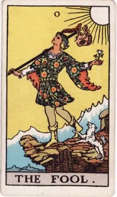
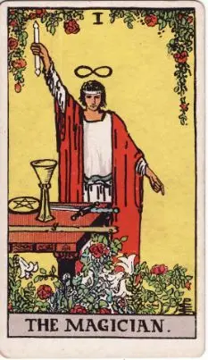
/2女祭師.webp) 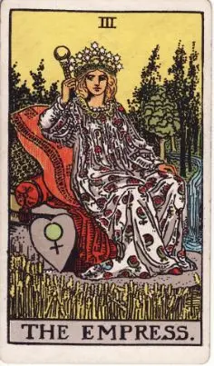
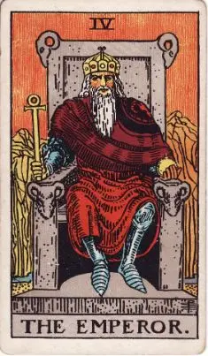
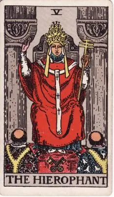
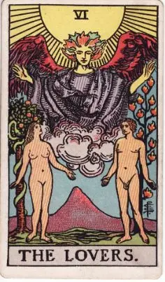
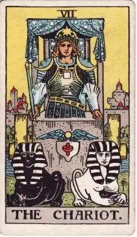
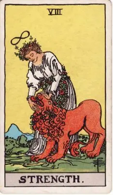
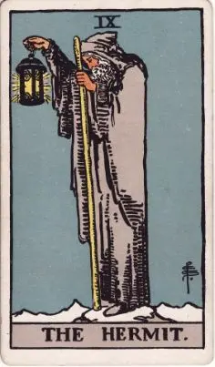
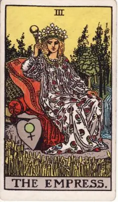
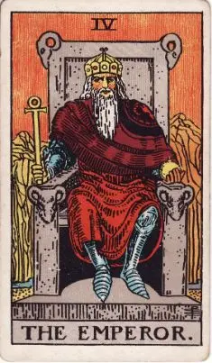
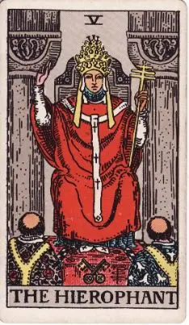
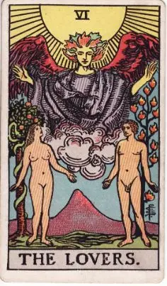
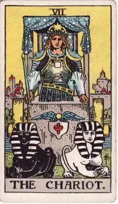
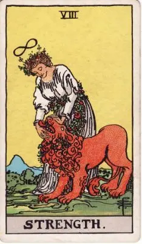
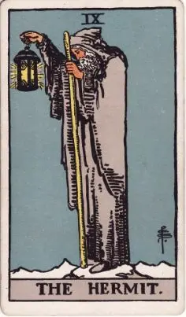
/10命運之輪.webp)
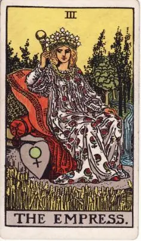
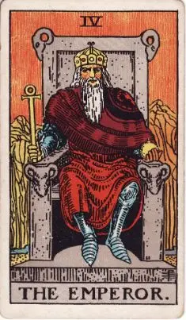
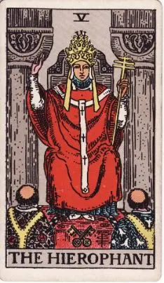
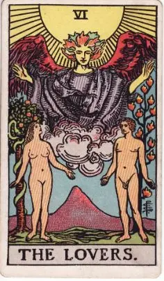
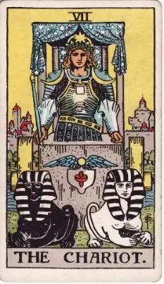
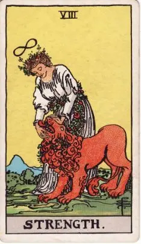
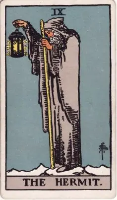
TAROT WORLD
/0愚者.webp)
/1魔術師.webp)
/3皇后.webp)
/4皇帝.webp)
/5教皇.webp)
/6戀人.webp)
/7戰車.webp)
/8力量.webp)
/9隱者.webp)
/11正義.webp)
/12倒吊人.webp)
/13死神.webp)
/14節制.webp)
/15惡魔.webp)
/16高塔.webp)
/17星星.webp)
/18月亮.webp)
/19太陽.webp)
/20審判.webp)
/21世界.webp)
/權杖/Wands01.webp)
/權杖/Wands02.webp)
/權杖/Wands03.webp)
/權杖/Wands04.webp)
/權杖/Wands05.webp)
/權杖/Wands06.webp)
/權杖/Wands07.webp)
/權杖/Wands08.webp)
/權杖/Wands09.webp)
/權杖/Wands10.webp)
/權杖/Wands11.webp)
/權杖/Wands12.webp)
/權杖/Wands13.webp)
/權杖/Wands14.webp)
/聖杯/Cups01.webp)
/聖杯/Cups02.webp)
/聖杯/Cups03.webp)
/聖杯/Cups04.webp)
/聖杯/Cups05.webp)
/聖杯/Cups06.webp)
/聖杯/Cups07.webp)
/聖杯/Cups08.webp)
/聖杯/Cups09.webp)
/聖杯/Cups10.webp)
/聖杯/Cups11.webp)
/聖杯/Cups12.webp)
/聖杯/Cups13.webp)
/聖杯/Cups14.webp)
/寶劍/Swords01.webp)
/寶劍/Swords02.webp)
/寶劍/Swords03.webp)
/寶劍/Swords04.webp)
/寶劍/Swords05.webp)
/寶劍/Swords06.webp)
/寶劍/Swords07.webp)
/寶劍/Swords08.webp)
/寶劍/Swords09.webp)
/寶劍/Swords10.webp)
/寶劍/Swords11.webp)
/寶劍/Swords12.webp)
/寶劍/Swords13.webp)
/寶劍/Swords14.webp)
/錢幣/Pents01.webp)
/錢幣/Pents02.webp)
/錢幣/Pents03.webp)
/錢幣/Pents04.webp)
/錢幣/Pents05.webp)
/錢幣/Pents06.webp)
/錢幣/Pents07.webp)
/錢幣/Pents08.webp)
/錢幣/Pents09.webp)
/錢幣/Pents10.webp)
/錢幣/Pents11.webp)
/錢幣/Pents12.webp)
/錢幣/Pents13.webp)
/錢幣/Pents14.webp)